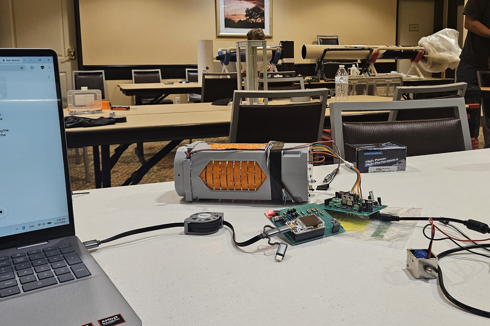
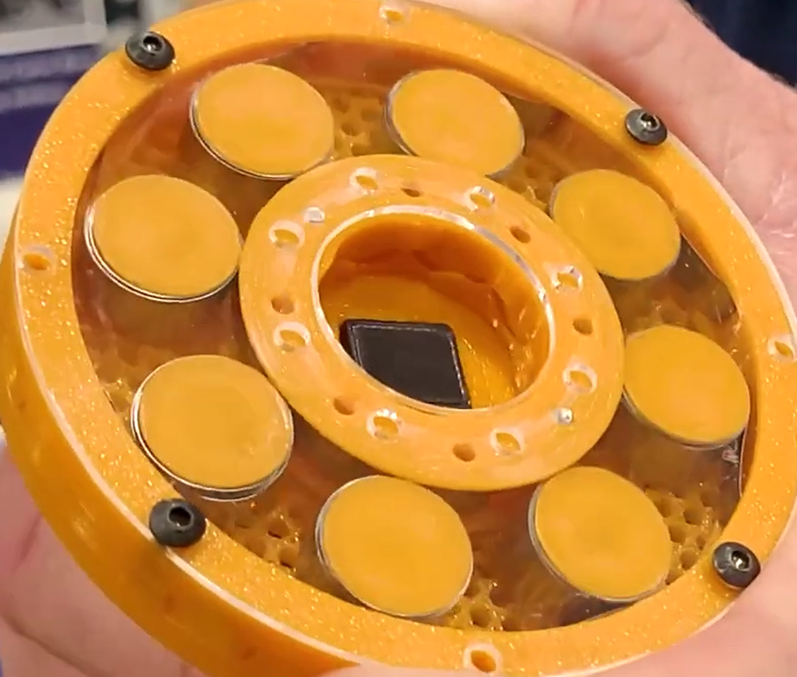

As a Payload Engineer for BYU’s team, I competed in the 2026 SDL Payload Challenge at the Intercollegiate Rocket Engineering Competition (IREC). Our project, Phoenix, was designed to address the limitations of traditional chemical batteries in deep space, specifically focusing on thermal degradation and dormancy failure.
The Phoenix payload serves as a proof-of-concept mechanical battery utilizing Negator-spring Rotary Generators (NRG). By storing energy through mechanical deflection rather than chemical reactions, the system delivers constant, stable power regardless of the thermal environment.
Prototyping & Bench Testing
Before integration, extensive bench validation was conducted on individual subassemblies. Much like chemical cells, individual NRG units can be arranged in series or parallel to tune voltage and current outputs. We utilized mathematical optimization models and high-precision 3D printing to optimize geometries, ensuring the architecture could scale effectively without transforming the fundamental mechanical storage logic.
Physical testing of the modules included verifying the ratcheting mechanism and the solenoid-actuated mechanical pawl release, ensuring smooth mechanical transitions under high strain energy storage.


Performance Characterization
To verify power output efficiency, torque testing campaigns focused on mapping out exact torque-displacement curves to quantify baseline energy density. Laboratory evaluation using an MTS apparatus verified highly repeatable profiles, yielding a total theoretical system capacity of 211 J.
Following Snowbird's flight to 26,000 feet, post-flight data analysis confirmed successful energy regeneration. The telemetry records closely mirror our pre-flight baseline data trends, validating the structural integrity and electrical efficiency of the mechanical battery configuration under severe loading conditions.
Flight Validation & Outlook
By eliminating the common failure modes of chemical storage (cyclic fatigue, thermal degradation, and radiation sensitivity) the Phoenix architecture demonstrates a viable alternative for severe environment deployment.
The system remained completely functional after enduring a supersonic launch profile reaching peak velocities of Mach 1.8. Whether serving as a primary high-peak power reserve for lunar exploration or an enduring backup alternative for spacecraft subject to prolonged dormancy, the NRG framework provides a high level of environmental resilience.